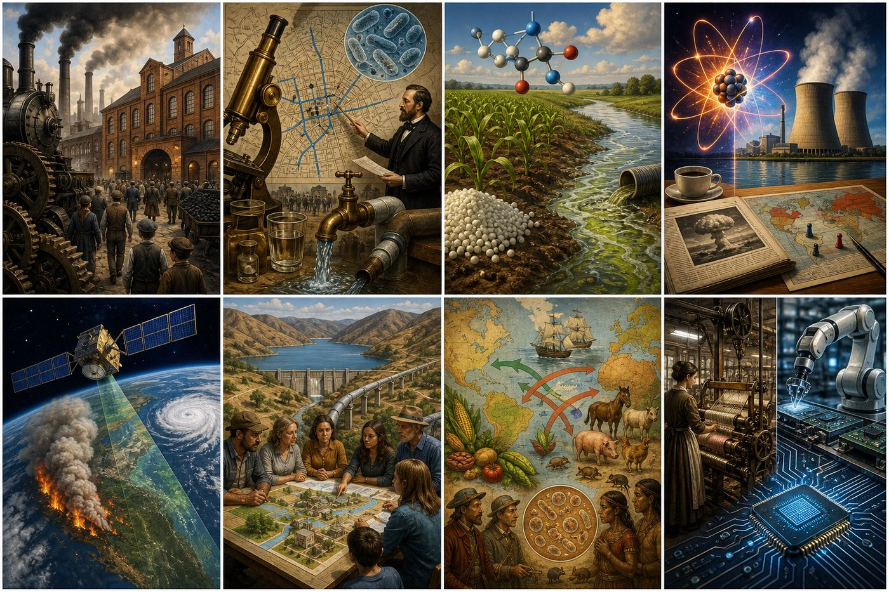

Here are some ideas we could build from.
The goal is not to create one giant interdisciplinary project. It is to identify small project modules where science, technology, and history naturally explain each other.

Idea Quick View
Click an idea to switch the focus card. The small cards underneath are the quick menu.
How We Could Set It Up
This is the decision for the meeting: where do these projects live?
1. Embedded Module
My recommendation. Put one science/technology project inside a history module where it naturally fits. This is easiest to schedule and still supports SBA literacy.
2. Paired Course Moment
Two courses hit the same topic around the same time. Science teaches the mechanism; history teaches the human consequence.
3. Project Bank
Build a small library of science-history modules that any course can borrow when useful, even if pacing does not line up perfectly.
Where These Could Fit
These are planning-level fits, not final curriculum placements.
Grade 6 Ancient Civilizations
Rivers and irrigation, materials, ancient engineering, calendars, astronomy, agriculture, archaeology, medicine, and city building.
Grade 7 Medieval/Early Modern
Trade routes and disease, Islamic Golden Age science, navigation, printing, Renaissance anatomy, and the Scientific Revolution.
Grade 8 US History
Exploration and exchange, westward expansion, California water, industrialization, urbanization, new technologies, and reform.
World History
Population, disease, agriculture, industrial revolutions, imperialism, energy, global trade, war technology, and environmental change.
US History HS
Industrialization, Progressive reform, Cold War science, atomic age, space race, environmental policy, computing, and automation.
Science Courses
Biology, chemistry, Earth science, physical science, environmental science, and engineering design can each supply the mechanism side.
Why It Works
The standards argument is simple: the content changes, but the literacy routine stays stable.